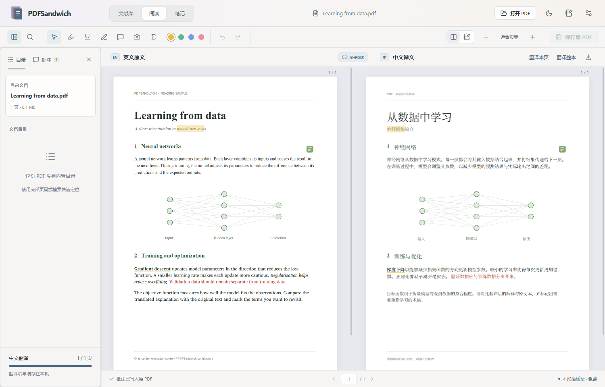
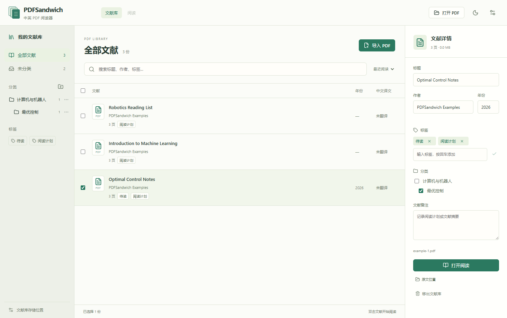

翻到哪里，优先译哪里
当前页插到队列前面，随后预取邻页。支持整本翻译与暂停，已经完成的译文保存在本机。
PDFSandwich，开源 Windows 中英对照 PDF 阅读器。
本地离线翻译论文与教材，左右同步浏览、高亮与批注。
Windows 10 / 11 · x64 · AGPL-3.0 开源

阅读区保留原文作为参照，翻译、浏览与批注在同一个窗口完成。
当前页插到队列前面，随后预取邻页。支持整本翻译与暂停，已经完成的译文保存在本机。
公式与图片沿用原始内容，译文保留加粗、斜体和颜色。章节编号独立保留，参考文献按条目排版。
高亮、下划线、手绘和便笺支持双向同步。高亮与下划线也支持整段、多段和跨页选择。文字标记按词句对应，支持手动校正，保存前自动备份原 PDF。
分类支持子分类，一份文献可拥有多个标签。按标题、作者或标签搜索，再接着上次的位置阅读。

导入时复制到软件文件夹下的文献库。开启“自动保存中文 PDF”后，译文逐页更新到库内原文旁；未翻译页保留英文。
下载并运行安装程序。当前安装包未签名，可在 Release 页面核对 SHA-256。
本地 HY-MT 模型约 1.1 GB，另需运行时、排版资源与词句对应模型。下载完成后可离线使用。
Ctrl + 滚轮调整大小，翻页自动优先翻译。选择标记工具添加批注，Ctrl + S 写入原 PDF。
应用源码以 AGPL-3.0 发布。本地模型下载后可离线翻译，不按量收费；HY-MT 权重遵循 Tencent HY Community License，并有自身的使用及地域限制。也可配置自己的云端 API，其额度和费用由服务商决定。
本地模式下，文档处理、译文缓存和批注都留在本机。云端模式会向你选择的服务发送待翻译文字。密钥保存在本机，不会写入 PDF 或上传到本项目。
阅读界面只绘制附近页面，翻译按页进行。已测试 1000 页、约 95 MiB 的合成 PDF；真实文件的表现取决于图片尺寸、字体和页面复杂度。首次加载模型及复杂页面的翻译需要等待。
不能保证。复杂公式、跨页句子或特殊字体仍可能导致排版与翻译偏差。词句自动对应也有误差，无法可靠匹配时会提示校正；可以选择另一侧的文字手动指定。请保留英文原文作为参照。
0.4.0 起可在软件设置中检查、下载和安装新版本。优先下载变化部分，必要时自动回退完整包；模型、批注和设置会保留。0.3.x 用户需要手动安装一次 0.5.0，后续无需再去网页下载安装包。
当前面向可选中文字的 PDF，不包含 OCR。编辑功能是高亮、下划线、手绘与文字批注；不提供改写原文正文或数字签名编辑。图片与公式不送去翻译。